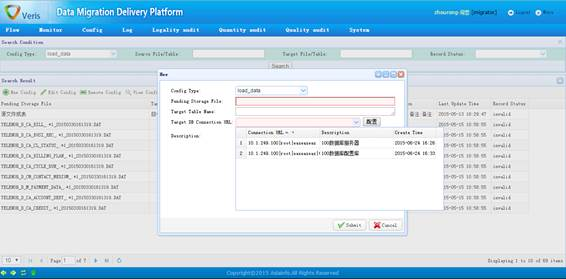

LoadData业务参数配置页面
功能描述：
LoadData控件提供将数据文件导入到指定数据表中的功能，一般情况下，LoadData控件配合SplitData控件使用，在SplitData控件将原始数据文件按照规则拆分后，LoadData控件负责将拆分后的文件分别加载入对应的分表中。
一条完整的LoadData控件业务参数包括待入库文件表达式、入库目标表名称和入库目标表数据库连接串三部分。其中，待入库文件表达式支持正则表达式和变量的书写方法；入库目标表名称支持变量；入库目标表数据库连接串要精确到数据源名称（Data Source Name）。
注意事项：
LoadData若出现部分文件重新入库的情况，则需要将所有入库到该目标表的文件全部重新入库，即以目标表为元素，其导入动作必须为完整的数据导入，否则会出现数据不全的问题。